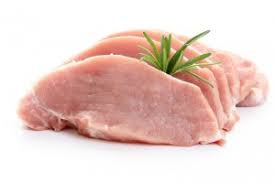
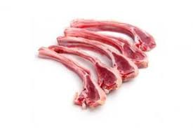
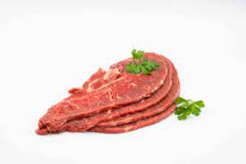
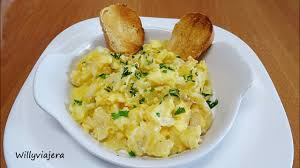
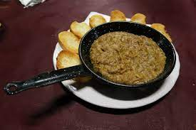
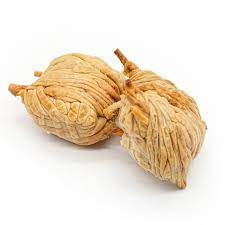

CARNE DE CERDO
La carne de cerdo posee una serie de minerales, aminoácidos y vitaminas como la B12, B9 y B6, B9 y B12 que influyen en el sistema nervioso central, en sus tejidos y funcionamiento. Esto, a su vez, tiene un demostrado efecto sobre la función cognitiva y, en definitiva, sobre la salud mental.

CARNE DE CORDERO
La carne de cordero además de sabrosa también nos aporta una alta cantidad de beneficios nutricionales. Es una carne que tiene un alto contenido en proteínas y que es de alto valor biológico, es fuente de vitaminas B3,B6, B12 y B2 y fuente de zinc y fosforo.

CARNE DE TERNERA
Unos 100 gramos de ternera aportan a nuestro organismo 21 gramos de proteínas, 77 gramos de agua, 2,8 gramos de grasa y 70 mg de colesterol, y nos aporta minerales esenciales para su buen funcionamiento, como hierro, potasio, magnesio, calcio y zinc.

AJOARRIERO
El ajoarriero es una receta típica de Cuenca. Es un paté frío de patata, bacalao ajo, huevo y aceite de oliva virgen extra

MORTERUELO
El morteruelo es el plato típico principal de Cuenca. Es un plato caliente compuesto por diferentes tipos de caza menor como son la perdiz, la codorniz, el conejo, la liebre y el cerdo. Se suele servir en una pequeña cazuela o plato de barro y debe comerse caliente.

ZARAJOS
Los zarajos se consideran un aperitivo (o incluso tapa) muy típico y tradicional de Cuenca (España) y del Madrid castizo (sobre todo en San Isidro, junto con las gallinejas y los entresijos), preparado a base de intestinos de cordero lechal marinados que después se enrollan en un pino o sarmiento y se fríen en aceite ...